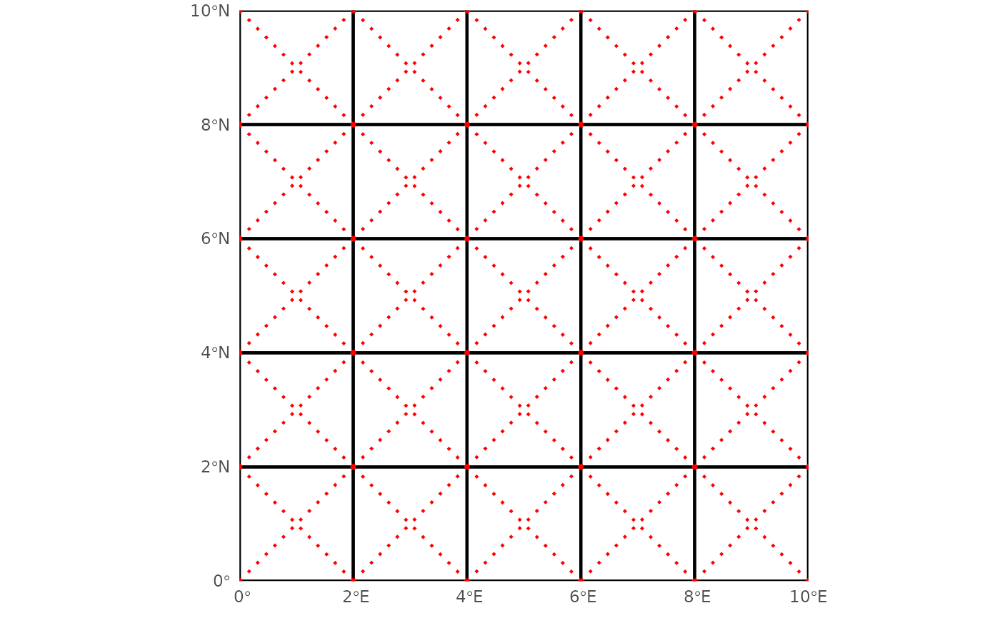

Add Geometric Features to Spatial Grid Cells
Source:R/spat_add_geometric_features.R
add_geometric_features.RdCreates multilinestring sf objects representing geometric features (crosses
or diagonals) within the centre of each grid cell in an input spatial grid.
Value
add_cross_to_grid: Ansfobject withmultilinestringgeometries representing crosses in the centre of each grid cell, retaining the input CRS.add_diagonals_to_grid: Ansfobject withmultilinestringgeometries representing diagonal and off-diagonal lines for each grid cell, retaining the input CRS.
Details
The following functions are included:
add_cross_to_grid: Creates amultilinestringsf object with crosses (horizontal and vertical lines) in the centre of each grid cell.add_diagonals_to_grid: Creates amultilinestringsf object with diagonal and off-diagonal lines for each grid cell.
Note
The functions require the sf, dplyr, purrr, tibble, and tidyr
packages to be installed and loaded.
Examples
# loading packages
ecokit::load_packages(dplyr, sf, ggplot2)
# ---------------------------------------------
# Create a 5x5 grid
# ---------------------------------------------
grid_original <- sf::st_make_grid(
sf::st_bbox(c(xmin = 0, ymin = 0, xmax = 10, ymax = 10), crs = 4326),
n = c(5, 5)) %>%
sf::st_sf(geometry = .)
# ---------------------------------------------
# Add crosses to grid
# ---------------------------------------------
grid_cross <- add_cross_to_grid(grid_original)
ggplot2::ggplot() +
ggplot2::geom_sf(
data = grid_original, mapping = ggplot2::aes(), color = "black",
linewidth = 0.75, fill = "transparent") +
ggplot2::geom_sf(
data = grid_cross, mapping = ggplot2::aes(), color = "red",
linewidth = 0.75, inherit.aes = TRUE, linetype = 3) +
ggplot2::scale_x_continuous(expand = c(0, 0, 0, 0), limits = c(0, 10)) +
ggplot2::scale_y_continuous(expand = c(0, 0, 0, 0), limits = c(0, 10)) +
ggplot2::theme_minimal()
# ---------------------------------------------
# Add diagonals to grid
# ---------------------------------------------
grid_diagonals <- add_diagonals_to_grid(grid_original)
ggplot2::ggplot() +
ggplot2::geom_sf(
data = grid_original, mapping = ggplot2::aes(), color = "black",
linewidth = 0.75, fill = "transparent") +
ggplot2::geom_sf(
data = grid_diagonals, mapping = ggplot2::aes(), color = "red",
linewidth = 0.75, inherit.aes = TRUE, linetype = 3) +
ggplot2::scale_x_continuous(expand = c(0, 0, 0, 0), limits = c(0, 10)) +
ggplot2::scale_y_continuous(expand = c(0, 0, 0, 0), limits = c(0, 10)) +
ggplot2::theme_minimal()
